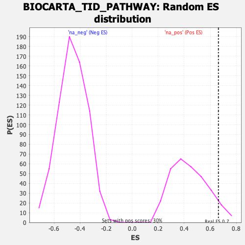

| | | Dataset | DE_genes |
| Phenotype | NoPhenotypeAvailable |
| Upregulated in class | na_pos |
| GeneSet | BIOCARTA_TID_PATHWAY |
| Enrichment Score (ES) | 0.66283756 |
| Normalized Enrichment Score (NES) | 1.5075154 |
| Nominal p-value | 0.0625 |
| FDR q-value | 0.41070476 |
| FWER p-Value | 0.995 |
Table: GSEA Results Summary
 Fig 1: Enrichment plot: BIOCARTA_TID_PATHWAY
Fig 1: Enrichment plot: BIOCARTA_TID_PATHWAY
Profile of the Running ES Score & Positions of GeneSet Members on the Rank Ordered List
| PROBE | GENE SYMBOL | GENE_TITLE | RANK IN GENE LIST | RANK METRIC SCORE | RUNNING ES | CORE ENRICHMENT | | 1 | TNF | | | 104 | 6.046 | 0.4645 | Yes |
| 2 | HSPA1A | | | 670 | 1.333 | 0.5318 | Yes |
| 3 | TP53 | | | 782 | 1.136 | 0.6131 | Yes |
| 4 | JAK2 | | | 1017 | 0.832 | 0.6628 | Yes |
| 5 | NFKB1 | | | 1815 | 0.385 | 0.6413 | No |
| 6 | IFNGR2 | | | 2488 | 0.211 | 0.6142 | No |
| 7 | NFKBIA | | | 2692 | 0.177 | 0.6149 | No |
| 8 | TAX1BP3 | | | 2865 | 0.153 | 0.6157 | No |
| 9 | RB1 | | | 2954 | 0.144 | 0.6213 | No |
| 10 | LIN7A | | | 4105 | 0.064 | 0.5518 | No |
| 11 | WT1 | | | 5897 | -0.032 | 0.4384 | No |
| 12 | IFNG | | | 6033 | -0.041 | 0.4329 | No |
| 13 | RELA | | | 6467 | -0.071 | 0.4104 | No |
| 14 | IFNGR1 | | | 7948 | -0.193 | 0.3297 | No |
| 15 | IKBKB | | | 8421 | -0.242 | 0.3180 | No |
| 16 | TNFRSF1A | | | 9348 | -0.352 | 0.2855 | No |
| 17 | TNFRSF1B | | | 11113 | -0.617 | 0.2195 | No |
| 18 | DNAJA3 | | | 11984 | -0.801 | 0.2256 | No |
Table: GSEA details [plain text format]

Fig 2: BIOCARTA_TID_PATHWAY: Random ES distribution
Gene set null distribution of ES for BIOCARTA_TID_PATHWAY